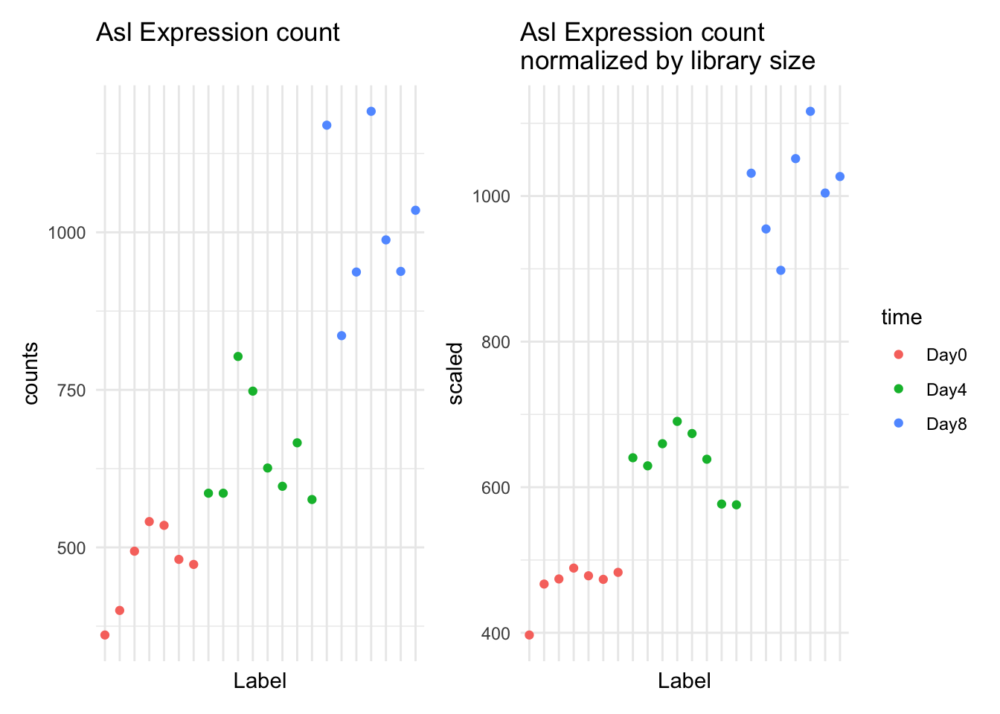
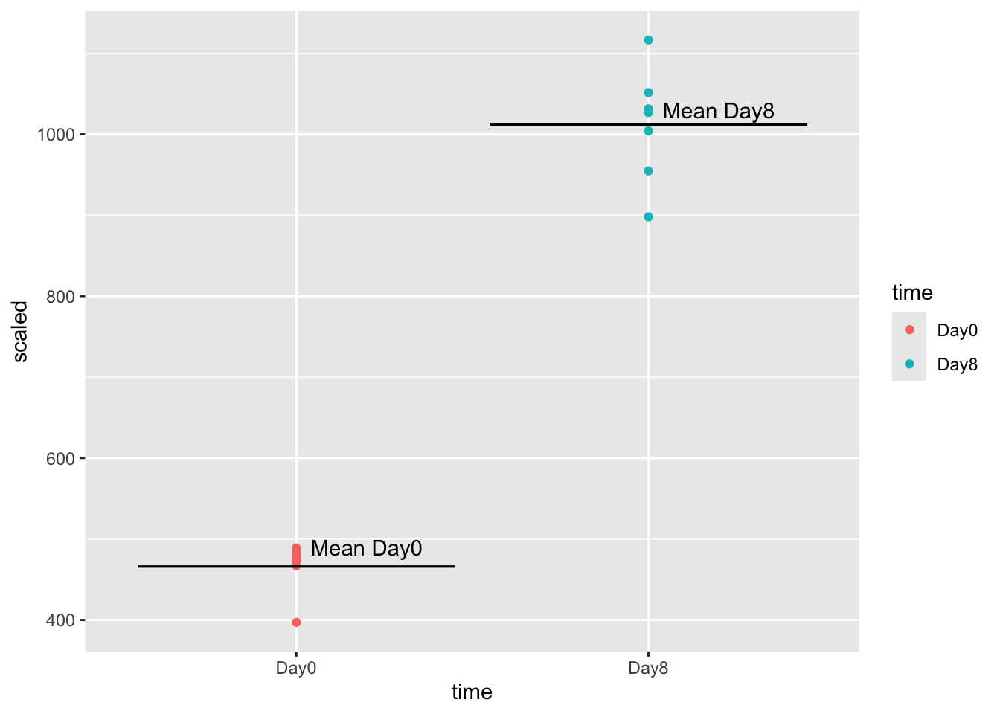
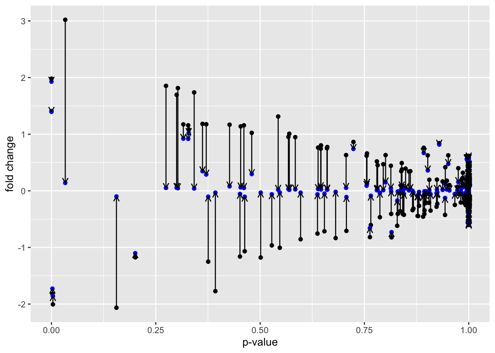
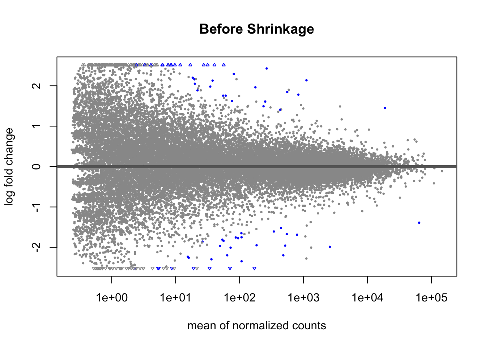
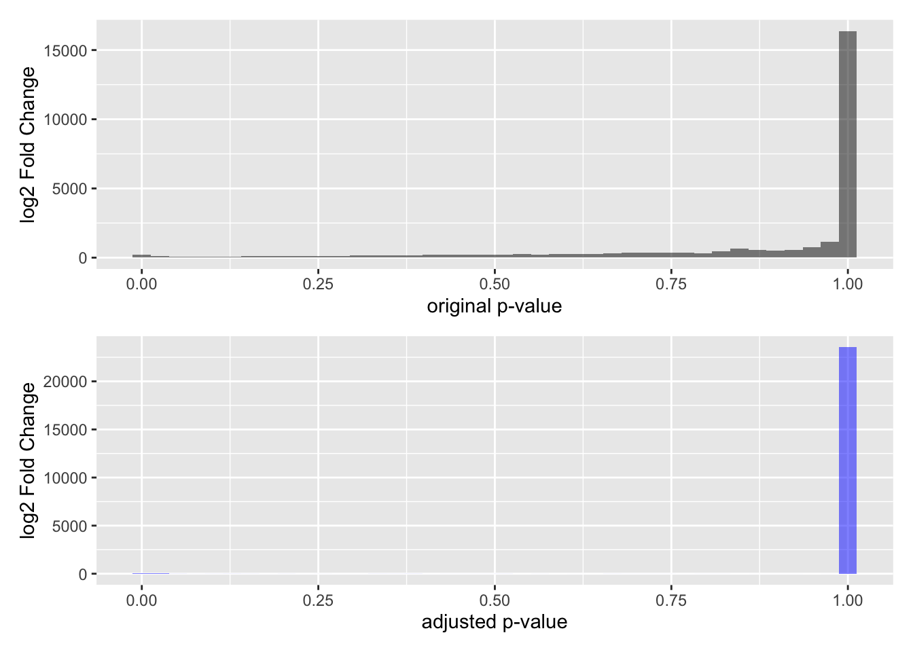
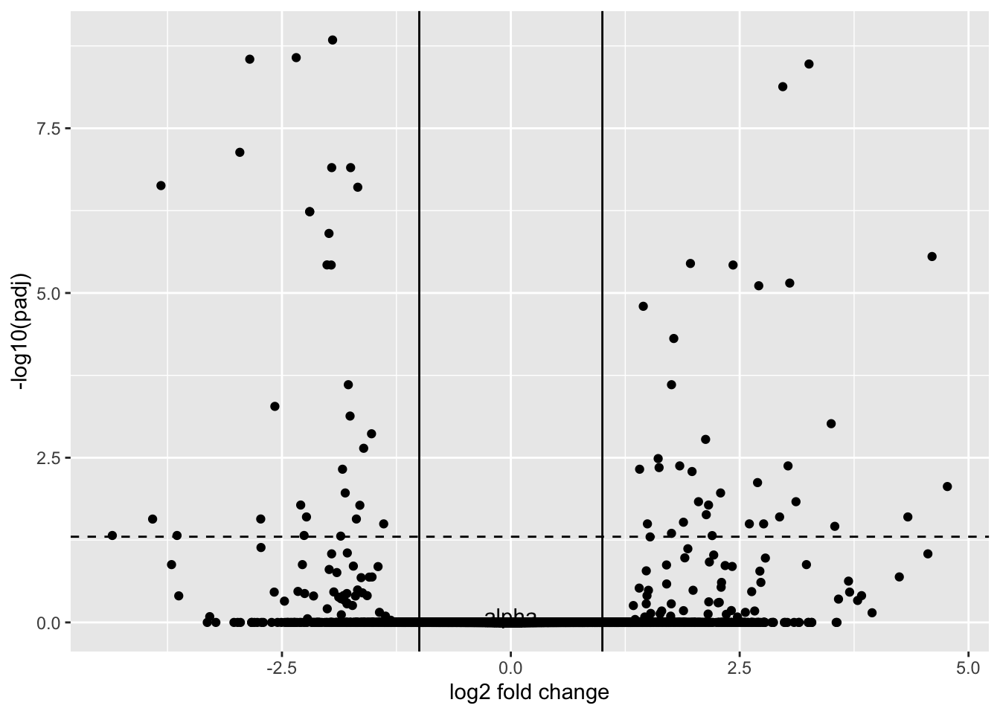
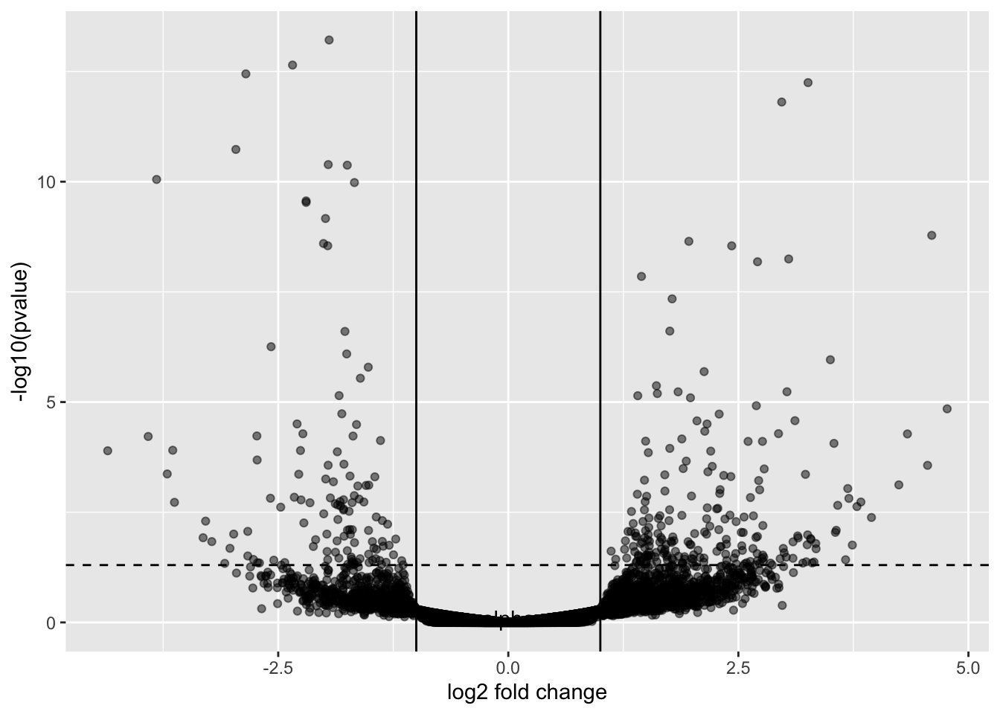
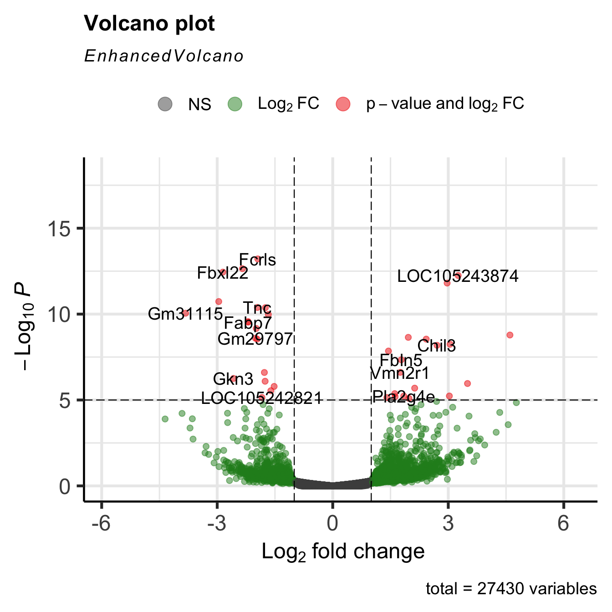
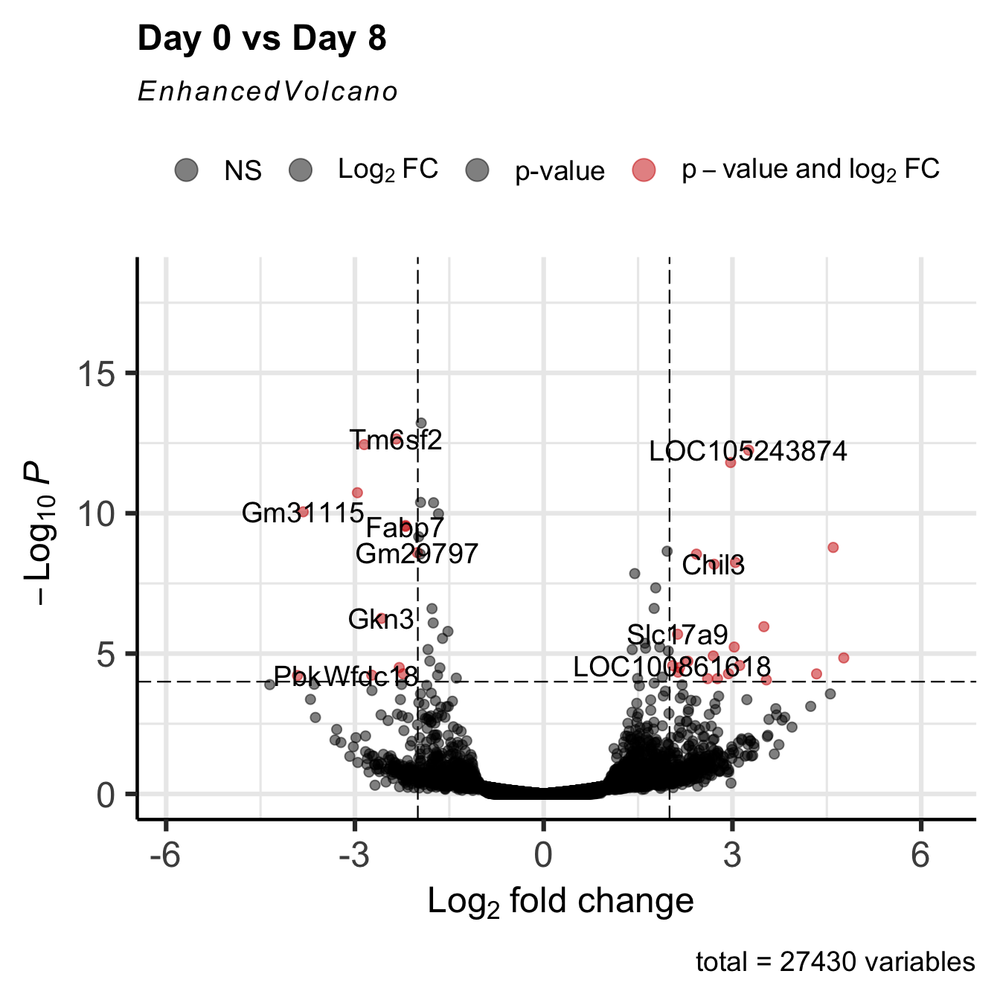
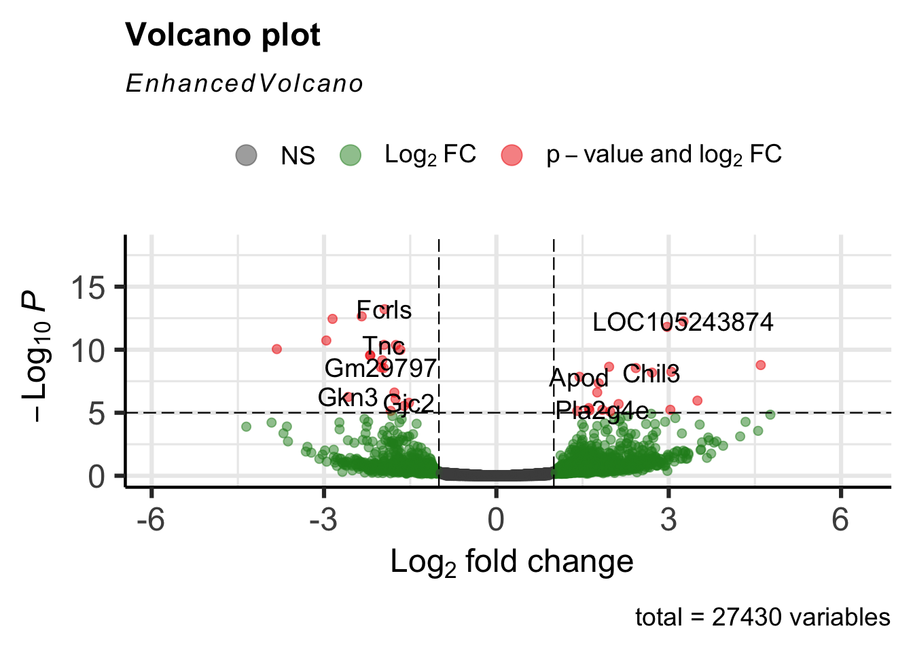

library(SummarizedExperiment)
library(tidySummarizedExperiment)
library(tidyverse)
library(DESeq2)
GSE96870 <- readRDS("data/GSE96870_se.rds")5 Differential Expression using DESeq2/edgeR
5.1 Learning Objectives
-
Explore model results in
DESeq2and gain intuition for what the statistical model is doing - Explain diagnosis plots such as Dispersion and MA plots and interpret them
-
Explain the role of each
DESeq2step -
Extract
DESeq2results given a specific contrast for comparison - Plot a Volcano plot and interpret it
Last week we talked about Experimental Design. This week we’re going to apply that knowledge to finding differential expressed genes or transcripts - finding those genes or transcripts that are expressed differently between groups in our experimental design.
That is, in general, are there genes for the samples in group A that have different counts than the samples in group B?
We’ll Explore the DESeq2 package as one method to find differentially expressed genes. There is also the edgeR package.
5.2 DESeq2 Functions
These are the functions from the DESeq2 packages that we will cover
| Stage | Function |
|---|---|
| Filter low expressed candidates |
rowSums() < 5 |
| Estimate size factors to normalize by library size |
estimateSizeFactors() |
| Estimate dispersion function |
estimateDispersion(),plotDispEstimates()
|
| Fit model to negative binomial distribution | nbinomWaldTest() |
| Return model statistics given contrast | results() |
| Return Shrinkage Estimates |
shrinkage(), plotMA()
|
| Plot Volcano Plot of results | EnhancedVolcano() |
Am I doing this right?
If you are new to differential expression, it is worth talking with the Bioinformatics Core about your experimental design and how to set up your model matrix and contrasts.
You did consult with them about the experimental design of your experiment before you sent the samples to be processed, I hope.
5.3 Setup
Remember, we started with a SummarizedExperiment object and now we have to transform it into an object that is usable with DESeq2.
5.4 DESeq
Last week, we talked about the uneven library sizes and how they can affect our expression estimates for each sample. Our solution to this was to scale each sample and expression estimates so the had the same library size.
tidySummarizedExperiment says: A data frame is returned for independent data analysis.Warning in DESeq2::DESeqDataSet(GSE96870_filtered, design = ~sex + time): some
variables in design formula are characters, converting to factors# A SummarizedExperiment-tibble abstraction: 603,460 × 9
# Features=27430 | Samples=22 | Assays=counts
.feature .sample counts sizeFactor seqnames start end width strand
<chr> <chr> <int> <dbl> <fct> <int> <int> <int> <fct>
1 Xkr4 GSM2545337 2410 0.909 1 3.67e6 3.67e6 1191 -
2 LOC105243853 GSM2545337 0 0.909 1 3.36e6 3.37e6 9183 +
3 LOC105242387 GSM2545337 121 0.909 1 3.66e6 3.67e6 11610 -
4 LOC105242467 GSM2545337 5 0.909 1 4.23e6 4.23e6 293 -
5 Rp1 GSM2545337 2 0.909 1 4.41e6 4.41e6 72 -
6 Sox17 GSM2545337 239 0.909 1 4.50e6 4.50e6 1064 -
7 Gm7357 GSM2545337 0 0.909 1 4.52e6 4.52e6 775 +
8 LOC105243855 GSM2545337 3 0.909 1 4.59e6 4.59e6 801 -
9 Gm6123 GSM2545337 7 0.909 1 4.77e6 4.77e6 1289 +
10 Mrpl15 GSM2545337 1019 0.909 1 4.79e6 4.79e6 154 -
# ℹ 40 more rows
As you can see, some, but not all of the intra-timepoint variation was removed, especially within the Day0 timepoint. We will attempt to account for this variability in our model.
This week we’ll talk about the model fitting procedure, which includes estimating the dispersion of the data, and conducting the statistical test.
5.5 The General Differential Expression Workflow
In the general workflow, we are in the grey box below.
graph TD A[Reading in Data] --> B B[Metadata] --> C C[Data Exploration] --> D subgraph DESeq2 D[Filtering and Normalization] --> E E[Design Matrix] --> F F[Dispersion Estimation] --> G G[Differential Expression] end G --> H[Annotation and Gene Set Analysis] G --> I[Clustering and Visualization] G --> J[Pathway and Network Analysis] classDef box fill:#DDD class DESeq2 box
5.6 What groups are we going to compare?
In our analysis, we are going to compare the two timepoints in our study: Day0 and Day8.
We want to find genes that have expression differences between these two timepoints.
5.7 Filtering and Normalization
We already talked about filtering out low expression counts and normalizing by library size in the previous week.
5.8 Modeling to Identify Candidate Genes
When we are calculating differential expression, we are using our model fitting as a filter for good and bad candidates. Our statistical test will generate a p-value, and we somehow use this p-value as a filtering criteria.
We have two ways of filtering candidates:
- Filter by Mean Fold Change in expression (see below section)
- Filter by model fit (p-value)
So far, so good. What some things that might make the modeling difficult?
- Variation in library size (handled by normalization)
- Low expression counts or zero expression counts (handled by modeling)
We’ll explore the distinctions the model makes in the next section.
5.9 Fold Change
Fold change represents the effect size, or our expression difference.
We calculate fold change by taking the mean expression for group 1 (Day0) and dividing it from the mean expression for group 2 (Day8).
For example, for Asl:
GSE_means <- GSE96870_normalized |>
filter(time %in% c("Day0", "Day8")) |>
filter(.feature == "Asl") |>
mutate(scaled = counts / sizeFactor, time=factor(time)) |>
group_by(time) |>
summarize(mean_expression = mean(scaled))tidySummarizedExperiment says: A data frame is returned for independent data analysis.GSE96870_normalized |>
filter(.feature == "Asl") |>
filter(time %in% c("Day0", "Day8")) |>
mutate(scaled = counts / sizeFactor) |>
ggplot() +
geom_point(aes(x=time, y=scaled, color=time)) +
geom_errorbar(mapping=aes(x=time,
ymin=mean_expression,
ymax=mean_expression),
data=GSE_means) +
annotate(geom="text", x=1.2, y=490, label="Mean Day0") +
annotate(geom="text", x=2.2, y=1030, label="Mean Day8") 
Let’s calculate the mean expression by time:
GSE_means <- GSE96870_normalized |>
filter(time %in% c("Day0", "Day8")) |>
filter(.feature == "Asl") |>
mutate(scaled = counts / sizeFactor, time=factor(time)) |>
group_by(time) |>
summarize(mean_expression = mean(scaled))tidySummarizedExperiment says: A data frame is returned for independent data analysis.GSE_means# A tibble: 2 × 2
time mean_expression
<fct> <dbl>
1 Day0 466.
2 Day8 1012.To calculate the fold-change, we divide day8 mean expression (1012) by day0 mean expression (466), getting a fold change of 2.2. The positive value means that mean(day0) < mean(day8).
Note that a negative fold change means that the fold change is in the opposite direction: mean(day0) > mean(day8).
One thing to note: for DESeq2, we don’t use the mean expression this way. We first need to fit the data using negative binomial distributions, and then report the fold change using the parameters of these distributions.
5.10 Volcano Plot
Below is a Shiny app that lets you explore the two groups in our data, day0, and day8. Be patient, it takes a moment to load.
Volcano plots are one way of displaying our results of differential expression analysis. They are a little bit hard to understand because they are on log scale, so let’s review what these axes represent.
- On our x-axis, Log2 fold expression. A handy rule of thumb is that a fold change of 2 means log2(2) = 1 on our axes.
- On our y-axis, -log2 p-value. The thing to remember, is as log2pvalue goes up, the lower the p-value.
We often put lines at log2foldchange = 1 and -1, and a line at log2(0.05), or our threshold for the p-value.
It’s important to have an intuition for how the model is discriminating between expression candidates.
5.11 Estimating Dispersions in the model
The main thing we are fitting is the dispersion of the data, which is like the variance of the data. We do this by estimating a function to our data.
Our function depends on the mean expression count of our candidate. That means we actually look across all genes that have a similar mean expression and use it to estimate the function, instead of a single gene.
The main thing to remember is that lower expression values are less reliable than the higher expression values. They will have an overall higher dispersion, and thus are more likely to be false positives:
We use estimateDispersions() in DESeq2 to fit our model.
GSE96970_est <- DESeq2::estimateDispersions(GSE96870_normalized)gene-wise dispersion estimatesmean-dispersion relationshipfinal dispersion estimatesplotDispEsts(GSE96970_est)Let’s dive more into this plot. Each point represents the dispersion.
Our model fits the overall dispersion across all genes and all mean expression counts.
Our beginning points are highlighted in black. After fitting, our points become those in blue. Notice that our dispersion estimates are actually “shrinking”, especially for those candidates that have high dispersion.
This is a good plot to examine to ensure your data is a good fit for the DESeq2 model. Evaluate the plot to see if:
- The data to generally scatter around the curve, with the dispersion decreasing with increasing mean expression levels.
- How much shrinkage you get across the whole range of means in your data. For any experiment with low degrees of freedom, you will expect to see more shrinkage.
- The data scatter in a cloud or different shapes, then you might want to explore your data more to see if you have contamination (mitochondrial, etc.) or outlier samples.
5.12 Model Fitting
After calculating dispersion, the next step is to actually conduct the statistical test. This is done with a negative binomial test called the Wald test.
The Wald test incorporates the sizeFactors, the dispersion estimates, and the design matrix to model the data. The model is estimating the Fold Change of our gene candidates given this information.
Remember, we are working towards identifying candidates that meet our log fold-change requirements and our model statistic.
model_fit <- DESeq2::nbinomWaldTest(GSE96970_est)After running the statistical test, we need to extract the comparison we’re interested in using the results() function. We need to specify the comparison and groups we’re interested in to the contrast argument, and can specify a log2 Fold Change threshold as an argument, as well as an alpha (significance cutoff).
Here we are choosing a log2FC of 0.5 (which corresponds to a fold change of 2).
GSE_results <- DESeq2::results(model_fit,
contrast = c("time", "Day8", "Day0"),
lfcThreshold = 1,
alpha = 0.05)
summary(GSE_results)
out of 27430 with nonzero total read count
adjusted p-value < 0.05
LFC > 1.00 (up) : 34, 0.12%
LFC < -1.00 (down) : 31, 0.11%
outliers [1] : 10, 0.036%
low counts [2] : 3723, 14%
(mean count < 1)
[1] see 'cooksCutoff' argument of ?results
[2] see 'independentFiltering' argument of ?resultsshrinkage <- lfcShrink(model_fit, coef="time_Day8_vs_Day0", lfcThreshold = 0.5)using 'apeglm' for LFC shrinkage. If used in published research, please cite:
Zhu, A., Ibrahim, J.G., Love, M.I. (2018) Heavy-tailed prior distributions for
sequence count data: removing the noise and preserving large differences.
Bioinformatics. https://doi.org/10.1093/bioinformatics/bty895computing FSOS 'false sign or small' s-values (T=0.5)Looking at this result set, we see that we have 34 candidates with fold change > 2, and 31 candidates with fold change < 2, that meet our alpha cutoff of 0.05. Our original fold change
5.13 Shrinkage of Fold Change estimates
The model that we use in DESeq2 is to fit negative binomial distributions to the data. This is because:
- Our data begins at 0 and goes up
- It is skewed (most of the genes have very low expression)
We incorporate the shrinkage information into our model. In effect, shrinkage reduces the fold-change estimates, but biased towards the high dispersion candidates.
Genes with high dispersion experience the most amount of shrinkage. They actually pay a penalty in that their fold-change estimates shrink. The crucial thing to note is that low dispersion candidates experience very little shrinkage.
We can visualize the shrinkage directly by plotting before (black) and after (blue) fold change vs p-value.
Warning: Removed 1 row containing missing values or values outside the scale range
(`geom_point()`).
Removed 1 row containing missing values or values outside the scale range
(`geom_point()`).Warning: Removed 1 row containing missing values or values outside the scale range
(`geom_segment()`).
Another way to visualize shrinkage is with an MA plot - this plots the log2 fold change on the y-axis and mean of normalized counts on the y-axis.
plotMA(GSE_results, main= "Before Shrinkage")
Before shrinkage, we can see there are a lot of high fold change candidates at low normalized counts. Compare this to after shrinkage:
We can see that the shrinkage procedure has shrunk a lot of these high-fold change candidates at lower counts - notice the low counts look “tighter”.
5.14 Adjustment for multiple comparisons
The last thing we need to do is adjust our p-values for multiple comparisons. We are doing over 20,000 statistical tests, and with each test we make, the probability that we have a false discovery increase. So we need a way to correct for multiple comparisons.
We adjust our p-value distribution using what’s called a FDR (False discovery rate) procedure. Here is the original p-value distribution, and the p-value distribution after adjustment.
before <- GSE_results |>
ggplot() +
geom_histogram(aes(x=pvalue), fill="black", alpha=0.5, bins=40) +
xlab("original p-value") +
ylab("log2 Fold Change")
after <- GSE_results |>
ggplot() +
geom_histogram(aes(x=padj), fill="blue", alpha=0.5, bins=40) +
xlab("adjusted p-value") +
ylab("log2 Fold Change")
before / afterWarning: Removed 10 rows containing non-finite outside the scale range
(`stat_bin()`).Warning: Removed 3733 rows containing non-finite outside the scale range
(`stat_bin()`).
Note that a lot of p-values get pushed towards a value of 1 - a lot more than the untransformed p-values.
The main thing to understand about this adjustment procedure is that it reduces the proportion of False Discoveries - which are candidates we think pass the p-value threshold but are not real discoveries. False discoveries are similar to False Positives, but with a different prioritization framework.
5.15 Going back to Volcano Plots
This is beginning to look familiar, doesn’t it? If we transform padj by taking the -log10, we arrive at our transformed volcano plot:
GSE_results |>
ggplot() +
geom_point(aes(y=-log10(padj), x=log2FoldChange), color="black") +
geom_hline(yintercept = -log10(0.05), lty=2) +
annotate(geom="text", x=0, y=0.1, label="alpha") +
xlab("log2 fold change") +
geom_vline(xintercept = -1) +
geom_vline(xintercept = 1)Warning: Removed 3733 rows containing missing values or values outside the scale range
(`geom_point()`).
This may not look like volcano plots you have seen before. Most volcano plots, we don’t show the transformed p-values or shrunken fold changes.
GSE_results |>
ggplot() +
geom_point(aes(y=-log10(pvalue), x=log2FoldChange), color="black", alpha=0.5) +
geom_hline(yintercept = -log10(0.05), lty=2) +
annotate(geom="text", x=0, y=0.1, label="alpha") +
xlab("log2 fold change") +
geom_vline(xintercept = -1) +
geom_vline(xintercept = 1)Warning: Removed 10 rows containing missing values or values outside the scale range
(`geom_point()`).
5.16 EnhancedVolcano
There is a package called EnhancedVolcano that lets you plot volcano plots.
Loading required package: ggrepelEnhancedVolcano(GSE_results,
lab = rownames(GSE_results),
x = 'log2FoldChange',
y = 'pvalue')
The plots are highly customizable, as you can see from the above link.
EnhancedVolcano(GSE_results,
lab = rownames(GSE_results),
x = 'log2FoldChange',
y = 'pvalue',
title="Day 0 vs Day 8",
pCutoff = 1e-4,
FCcutoff= 2,
col=c('black', 'black', 'black', 'red3'),
colAlpha = 0.5)
5.17 The Entire DESeq2 workflow
We have taken apart the Differential expression process, but as you analyze your data, all of this is done within the DESeq() function:
GSE96870_deseq <-
DESeqDataSet(GSE96870, design = ~ sex + time) #make DESeqDatasetWarning in DESeqDataSet(GSE96870, design = ~sex + time): some variables in
design formula are characters, converting to factorsGSE96870_filtered <- GSE96870_deseq[rowSums(assay(GSE96870_deseq)) > 5,] #filter out low expressing candidates
GSE96870_fit <- DESeq(GSE96870_filtered) #run estimateSizeFactors, estimateDispersions, nbinomialWaldTestestimating size factorsestimating dispersionsgene-wise dispersion estimatesmean-dispersion relationshipfinal dispersion estimatesfitting model and testingGSE_results <- results(GSE96870_fit,
contrast = c("time", "Day8", "Day0"),
lfcThreshold = 1,
alpha = 0.05) #calculate results from the contrast
EnhancedVolcano(GSE_results,
lab = rownames(GSE_results),
x = 'log2FoldChange',
y = 'pvalue')
5.18 Take Home Points
- Fold change represents the effect size - the mean expression value of 1 group divided by the mean expression value of the 2nd group.
- We need to filter out those genes with low expression (low count number) before we run analysis.
- Count Data must be normalized by the library size to compare across samples.
- We model data using the negative binomial distributions, and use the models to find expression differences.
- There are two quantities we adjust during the modeling procedure:
- Fold change using our dispersion estimation / shrinkage procedure, which penalizes lower count candidates by shrinking their fold change. Low dispersion candidates are not as penalized as much by the shrinkage procedure
- P-values using False Discovery Rate Adjustment, which adjusts for multiple comparisons
- In the end, we have high fold-change, low p-value candidates for further downstream analysis.